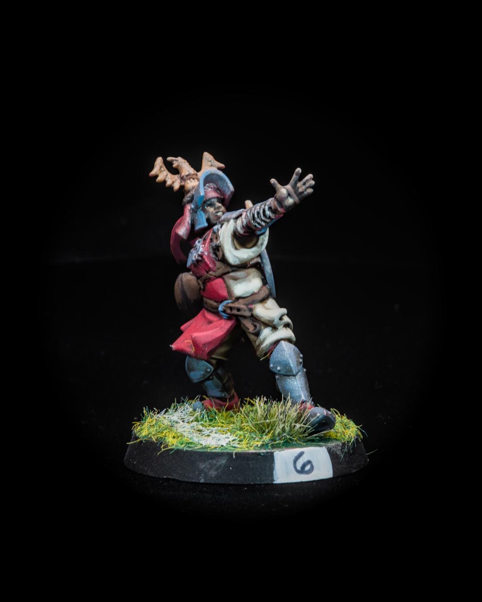
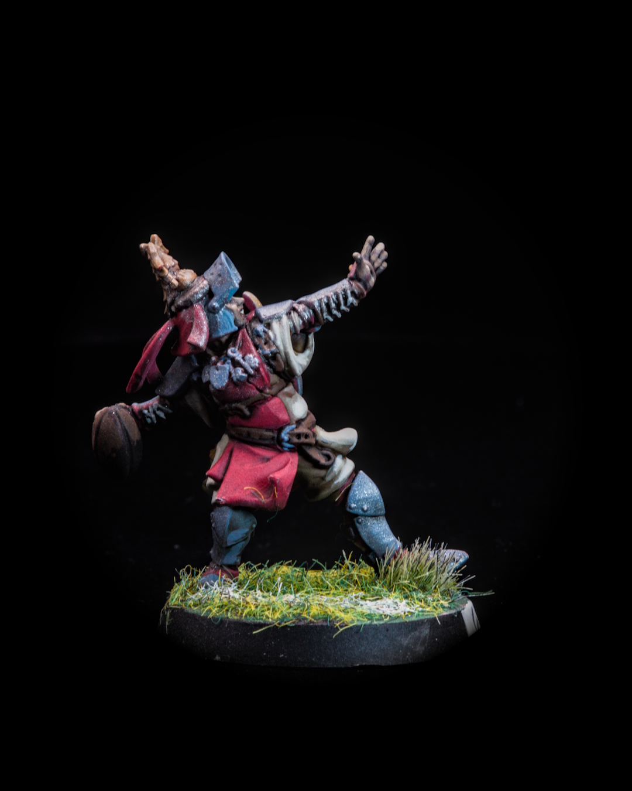
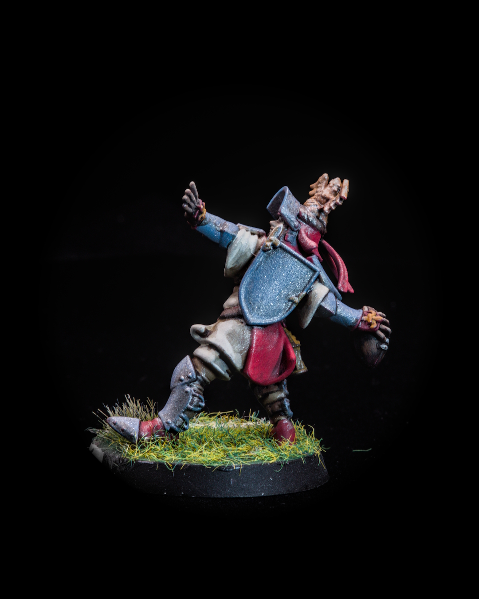
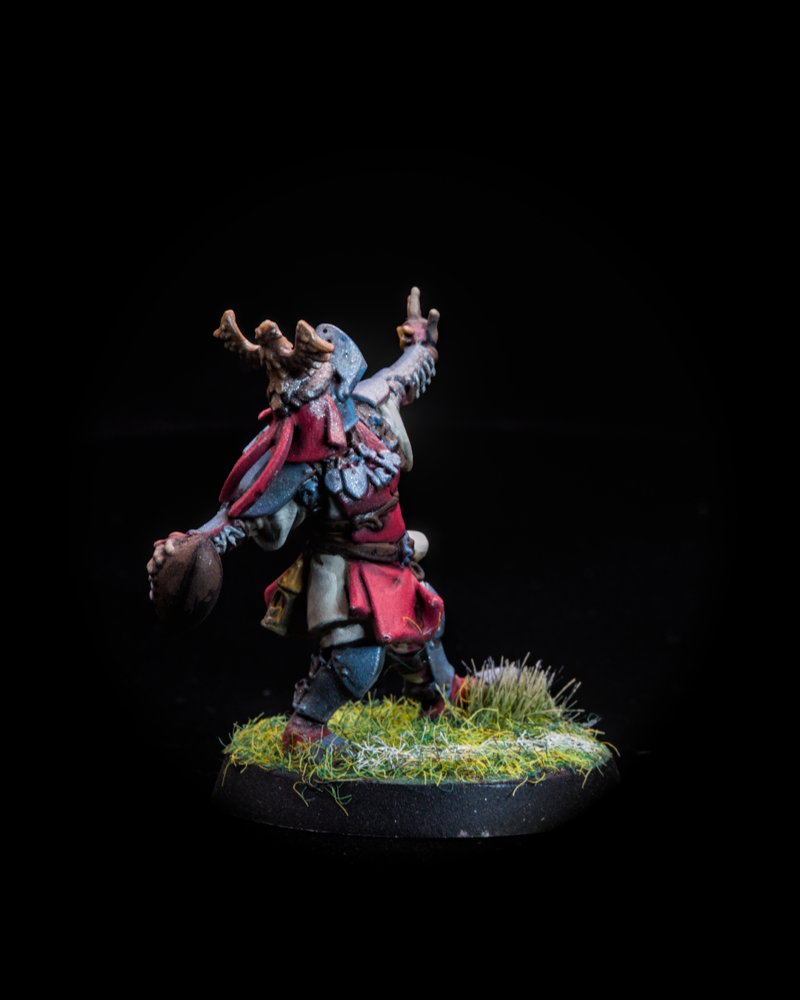

Rogerin, one tiny face
Every team needs someone calling the plays. For the Holy Hand Grenadiers, that's No. 6 Rogerin, Knight Thrower, Sure Hands and Leader, already pointing at where the ball is going.
Today was one small job: his face. About 27 minutes on a face this tiny, and honestly, faces at this scale are still where I struggle most. Close-ups help me see what's working and what isn't, so I made sure to grab some this time.
So, face painters: what's your best tip for tiny faces? Eyes or no eyes? Brush size, paint consistency, magnification, order of steps? I'll take all of it 👀
The velvet backdrop and camera gear behind these shots are on the gear page (link in bio). They're affiliate links, so using them helps keep the paint racks stocked 🙌
@warhammerofficial
#bloodbowl #miniaturepainting #bretonnian #warhammercommunity #paintingwarhammer
Gear in this post
- PROSCALE wall paint racks (2-pack)The wall-mounted paint shelves behind my desk
- Krydrufi V1 2.0 modular painting station also on AmazonThe modular painting kit that lets me paint at the kitchen table, with brush cleaner and holders built in15% off at Krydrufi with code lefthanded
- Magnifying headband with LED lights5 lenses, for the tiny details
- Black velvet photo backdropLight-absorbing, non-reflective black for dark backgrounds
Affiliate links. All gear